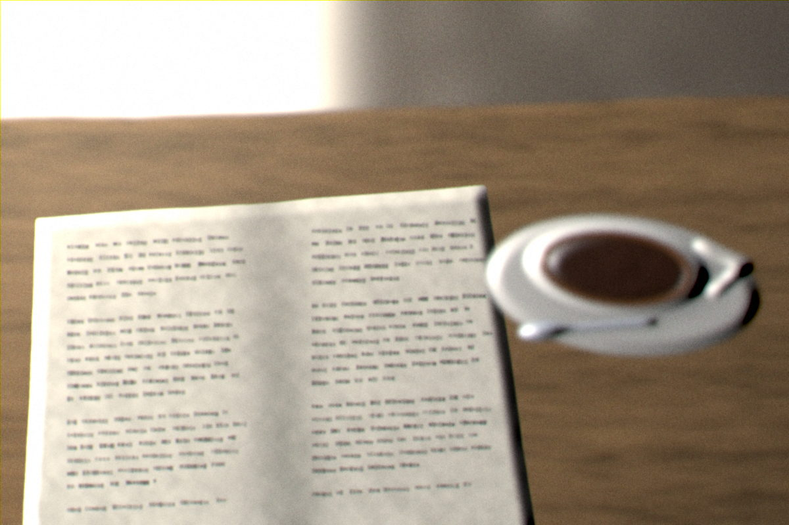
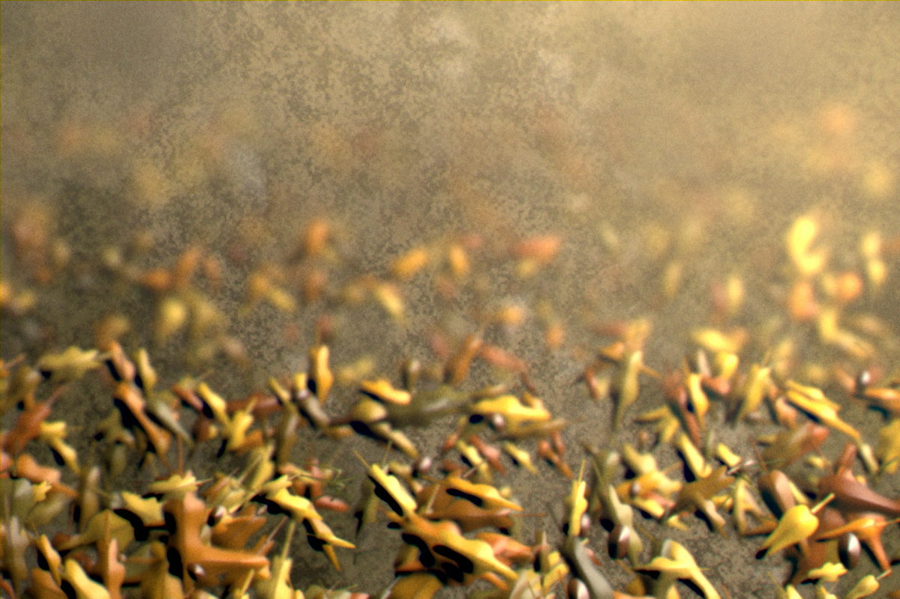
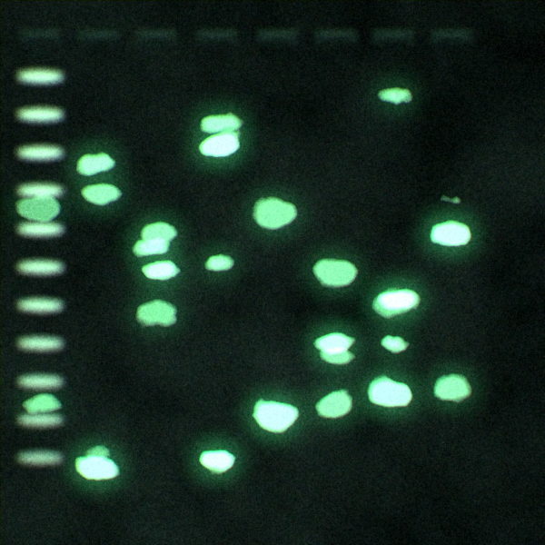

Velums Oberfläche ist Papier und Grau. Diese Seite prüft die Behauptung,
die daraus folgt: dass eine stille Oberfläche mit bunten Fotos
zusammenarbeitet, statt gegen sie zu kämpfen. Geprüft wird nicht
an Platzhaltern, sondern an denselben Bildern, die in den Screens stehen —
darunter absichtlich ein sehr buntes und ein fast schwarzes.
Alle Kontraste unten sind gegen die tatsächlichen Bildpunkte unter
dem Text gerechnet, nicht gegen die Kartenfarbe. Genau an dieser
Stelle scheitern stille Entwürfe an bunten Fotos.
1 · Bibliothek
Zwölf Notizbücher nebeneinander
Der Charakter kommt aus Struktur und Papierton, nicht aus Farbe:
Faserpapier, Leinen, Kraftpapier, marmoriert, geripptes Bütten,
Millimeterpapier. Kein Deckel liegt über 22 % Sättigung. Die Frage
ist, ob zwölf gedeckte Papiere im Regal noch auseinanderzuhalten sind.
Hell
Dunkel
2 · Journal
Derselbe Eintrag, hell und dunkel
Ein echter Eintrag in echter Umgebung: Datums-Schiene als senkrechter
Faden, Knoten am Eintrag, Foto, Text, Herkunfts-Chip. Das Datum steht in
der Serif auf dem Bild — einer der sechs erlaubten Serif-Orte, und damit
ein Messpunkt.
Hell

14. NovemberFreitag · 08:40
Vor der Vorlesung noch einmal Kapitel 7
Membrantransport sitzt jetzt. Der Unterschied zwischen
erleichterter Diffusion und aktivem Transport ist die
Energiebilanz, nicht die Richtung — das war mein Denkfehler
seit zwei Wochen.
aus Zellbiologie · Notiz3 Lernkarten
Dunkel
14. NovemberFreitag · 08:40
Vor der Vorlesung noch einmal Kapitel 7
Membrantransport sitzt jetzt. Der Unterschied zwischen
erleichterter Diffusion und aktivem Transport ist die
Energiebilanz, nicht die Richtung — das war mein Denkfehler
seit zwei Wochen.
aus Zellbiologie · Notiz3 Lernkarten
3 · Grenzfälle
Sehr bunt und fast schwarz — läuft die Karte aus dem Ruder?
Links das farbigste Bild des Satzes (Herbstlaub, Sättigung weit über
allem anderen), rechts das dunkelste (Gelelektrophorese unter UV, fast
schwarzer Grund mit sehr hellen Banden). Beide stecken in derselben
Karte, ohne Sonderregel. Wenn die Oberfläche irgendwo mit dem Bild
konkurriert, dann hier.
Hell · sehr bunt

3. NovemberMontag · 09:05
Weg zur Uni
Erste Vorlesung bei Prof. Wendt nach den Ferien. Zwanzig
Minuten zu Fuß, das reicht für eine Wiederholung.
Journal1 Foto
Hell · fast schwarz

6. NovemberDonnerstag · 16:20
Gel ausgewertet
Bande bei etwa 1,2 kb ist deutlich. Spur 4 ist
überladen, das wiederhole ich mit halber Menge.
aus LaborprotokollPraktikum
Dunkel · sehr bunt
3. NovemberMontag · 09:05
Weg zur Uni
Erste Vorlesung bei Prof. Wendt nach den Ferien. Zwanzig
Minuten zu Fuß, das reicht für eine Wiederholung.
Journal1 Foto
Dunkel · fast schwarz
6. NovemberDonnerstag · 16:20
Gel ausgewertet
Bande bei etwa 1,2 kb ist deutlich. Spur 4 ist
überladen, das wiederhole ich mit halber Menge.
aus LaborprotokollPraktikum
4 · Medien
Vier Aufnahmen aus dem Semester
Hier stand die Beschriftung zuerst auf dem Bild. Die Messung hat das
verworfen: über acht Kacheln kam weiße Schrift nie über 3,0:1, und auf
der abfotografierten Notizseite — fast weißes Papier — ist sie gar nicht
zu retten. Der zweite Versuch, ein Chip mit eigener deckender Fläche,
ist an derselben Hürde gescheitert: sein Text hielt 14,5:1, aber die
Fläche hob sich auf der leuchtenden Gelbande nur mit 1,2:1 vom Bild ab.
Jetzt steht beides unter der Kachel. Das Bild behält seine Fläche
ganz.
Hell
Dunkel
5 · Lernkarten
Eine Bildkarte
Die Intervall-Reihe unter der Karte ist ein Faden mit Punkten: gefüllt
sind die Wiederholungen, die stattgefunden haben, hohl die nächste
(DNA §3). Das Bild ist eine Durchlichtaufnahme; die Frage ist, ob es
neben dem grauen Kartenkörper zu laut wird.
Hell
Welche Struktur färbt sich hier violett — und warum?
Zellbiologie · Prof. Wendt · Kapitel 4
1 d · 3 d · heute · in 8 d
Dunkel
Welche Struktur färbt sich hier violett — und warum?
Zellbiologie · Prof. Wendt · Kapitel 4
1 d · 3 d · heute · in 8 d
6 · Messung
Kontrast gegen die Bildpunkte, nicht gegen die Karte
Gemessen wird an der gerenderten Seite: Die Seite wird zweimal
aufgenommen, einmal normal und einmal mit ausgeblendetem Text. Aus der
zweiten Aufnahme werden die Bildpunkte genau unter jeder Textzeile
gelesen, daraus die relative Luminanz gebildet und gegen die Textfarbe
gerechnet. Angegeben ist der ungünstigste Wert (2. Perzentil
der Bildpunkte), nicht der Mittelwert — ein Mittelwert verdeckt genau die
hellen Stellen, an denen weiße Schrift verschwindet.
Messpunkt
Textfarbe
ohne Verlauf
wie gebaut
Urteil
Notizbuch-Titel auf dem Deckel · Serif in Ink (12 Deckel × 2 Modi) ungünstigster: hell · marmor-tinte
#16181C
kein Verlauf nötig
5.51:1
hält≥ 4,5:1
Datumsmarke auf dem Foto · hell
#FFFFFF
1.00:1
6.61:1
hält≥ 4,5:1
Datumsmarke auf dem Foto · dunkel
#FFFFFF
1.00:1
6.61:1
hält≥ 4,5:1
Datumsmarke auf sehr buntem Foto (Herbstlaub)
#FFFFFF
1.79:1
9.73:1
hält≥ 4,5:1
Datumsmarke auf fast schwarzem Foto (Gel)
#FFFFFF
1.30:1
7.94:1
hält≥ 4,5:1
Kachel-Beschriftung unter dem Bild · hell
#5C5E62
kein Verlauf nötig
5.81:1
hält≥ 4,5:1
Kachel-Beschriftung unter dem Bild · dunkel
#9FA1A4
kein Verlauf nötig
7.40:1
hält≥ 4,5:1
Kachel-Marke unter dem Bild · hell
#5C5E62
kein Verlauf nötig
5.81:1
hält≥ 4,5:1
Kachel-Marke unter dem Bild · dunkel
#9FA1A4
kein Verlauf nötig
7.40:1
hält≥ 4,5:1
Die Regel, die aus der Messung folgt. Auf einem Foto
steht nur, was einen gemessenen Untergrund mitbringt. Im Journal
ist das die Datumsmarke: unter ihr liegt ein neutraler Verlauf, kein
Balken und kein Kasten — er trägt keine Farbe, reicht nur so weit wie der
Text und läuft zur Bildmitte auf null. Ohne ihn steht die Marke bei
1,0:1 bis 1,8:1, mit ihm bei 6,6:1 bis 9,7:1.
An zwei Stellen hat die Messung dem Entwurf widersprochen, und beide Male
hat der Entwurf nachgegeben. Erstens: Auf den zwölf
Deckeln war ein Verlauf geplant. Er war überflüssig — der ungünstigste
Deckel trägt den Ink-Titel ohne jede Hilfe mit 5,5:1. Er ist gestrichen,
und die Papiere behalten ihre Oberfläche. Zweitens: Auf
den Medien-Kacheln war Text geplant. Er war nicht zu retten — weder weiß
auf dem Bild (nie über 3,0:1) noch als Chip mit eigener Fläche (deren
Kante auf der Gelbande bei 1,2:1 verschwand). Er steht jetzt unter dem
Bild.
Und eine Regel für das Bildmaterial selbst: Ein
Deckelpapier, das den Ink-Titel nicht mit 4,5:1 trägt, ist kein
zulässiges Deckelpapier. kraft-graubraun lag
zuerst bei 4,29:1 und ist aufgehellt worden, statt den Titel mit einem
Verlauf zu retten. Die Grenze liegt bei etwa L* 60.